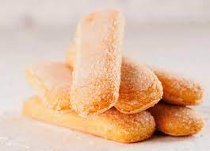

Biscochin

An Easy and Tasty yet Small Biscochin
A biscochin can be made as easy as following the 1-2-3-4 rule;
Ingredients
- 1 half coups of yogurt
- 2 halfs coups of sugar
- 3 halfs coups of flavour
- 4 halfs eggs, or equivalently 2 eggs
- a tablespoon of baking powder
Steps
- Pre-heat the oven at 180 celcius.
- In a bowl, add the yougurt with the eggs and the sugar and mix them until you get an homogenous consistency.
- Add the flavour and the baking powder and continue mixing.
- Put the mix in a oven recipient and put it into the preheated oven for 30 minutes.
- Voila.